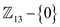
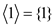
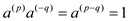
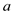
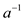

Finding subgroup of :
Consider the group={0,1,2,3,4,5,6,7}.
• The total number of subgroup of a group is equal to the total number of divisor. So the divisors of 9 are 1, 3 and 9 itself. Therefore, the total number of subgroups of a groupis equal to 3.
• It is known that every group has two trivial subgroups which are zero and itself. So, the first two trivial subgroups of are given as:
• Sub groups for can be
generated using 
• Sub group generated by 0:
• Sub group generated by 1:
• Sub group generated by 3:
Hence, the subgroups of
are
,  and
.
and
.
Finding subgroups of :
Consider the group.
• Here, 13 is a prime number. Therefore, the subgroup of is same as. That is .
• The total number of subgroup of a group is equal to the total number of divisor. So the divisor of 12 are 1, 2, 3, 4, 6 and 12 itself. Therefore, the total number of subgroup of a groupis equal to 6.
• Now, calculate the power of, which are given below:
•
• Therefore, is cyclic of order 12, with a generator 2.
Thus the sub groups of are ,,,, and
• Sub groups for can be generated using
• Sub group generated by 1:
=
• Sub group generated by 2:
=
• Sub group generated by 3:
=
• Sub group generated by 4:
=
• Sub group generated by 8:
=
• Sub group generated by 12:
=
Hence, the subgroups of are , , , ,and .
To prove that a non-empty closed subset of a finite group is a subgroup the following properties of the group where S is the set and is the binary operation must hold:
• Closure.
• Identity.
• Associativity.
• Inverse.
To prove that a non-empty closed subset (let it is denoted by H) of a finite group (let it is denoted by G) is a subgroup, the above-mentioned properties are satisfied in the following way:
Closure: Suppose H is the non-empty closed subset of a
finite group G. It should be proved that H is a sub-group. Since H
is closed, so it follows the condition that if  , then
.Thus, the
subset is closed.
, then
.Thus, the
subset is closed.
Identity: Since S is a finite group, every element had a finite order so, if there is some number of times that can be added to itself so that the identity can be obtained. So, adding any two things in helps to get something in . Suppose then . Since, the subset is finite, there must be a condition such that . Hence,  and therefore the subset must contain the identity.
Associativity: The associativity is inherited from the group because is a property of binary operation.
Inverse: Suppose , the inverse of the element ‘a’ is as . Thus, the inverse of every element is contained within itself because the element is added to itself several times equal to one less than its order.
Permutation: A mapping  is define
to be a permutation if the mapping is one-one and onto and define
from same set to same set.
is define
to be a permutation if the mapping is one-one and onto and define
from same set to same set.
That is if such that
is
one-one and onto than is said to
be a permutation on 
Consider a mapping
Such that
Here,
Define as
 ……(1)
……(1)
Suppose,
Then (1) can be rewritten as
To Prove: is one-one
Suppose,
Consider,
……. (2)
Suppose,
 …… (3)
…… (3)
And
……. (4)
Substitute (3) and (4) in (2)
…… (5)
Here, and with reference to the theorem 31.13 it can say that is a finite abelian group thus it can say that the inverse of  will exist in . Let  denote the inverse of in that is
…… (6)
Pre multiply both side of (5) by
…… (7)
Apply (6) in (7)
Thus,
Hence, it can say that the function is one-one.
To Prove: is onto
Suppose,
Such that
…… (8)
The equation (8) can be rewritten as
…… (9)
Here, and with reference to the theorem 31.13 it can say that is a finite abelian group thus it can say that the inverse of will exist in . Suppose denote the inverse of in that is
…… (10)
Pre multiply both side of (9) by
…… (11)
As and
 belongs to and
is
a finite abelian group therefore.
belongs to and
is
a finite abelian group therefore.
Thus, .
Thus for each there exist such that
Hence, it can say that the function is onto.
The function is both
one-one and onto. Therefore, by the definition of permutation, it
can say that is
permutation of .